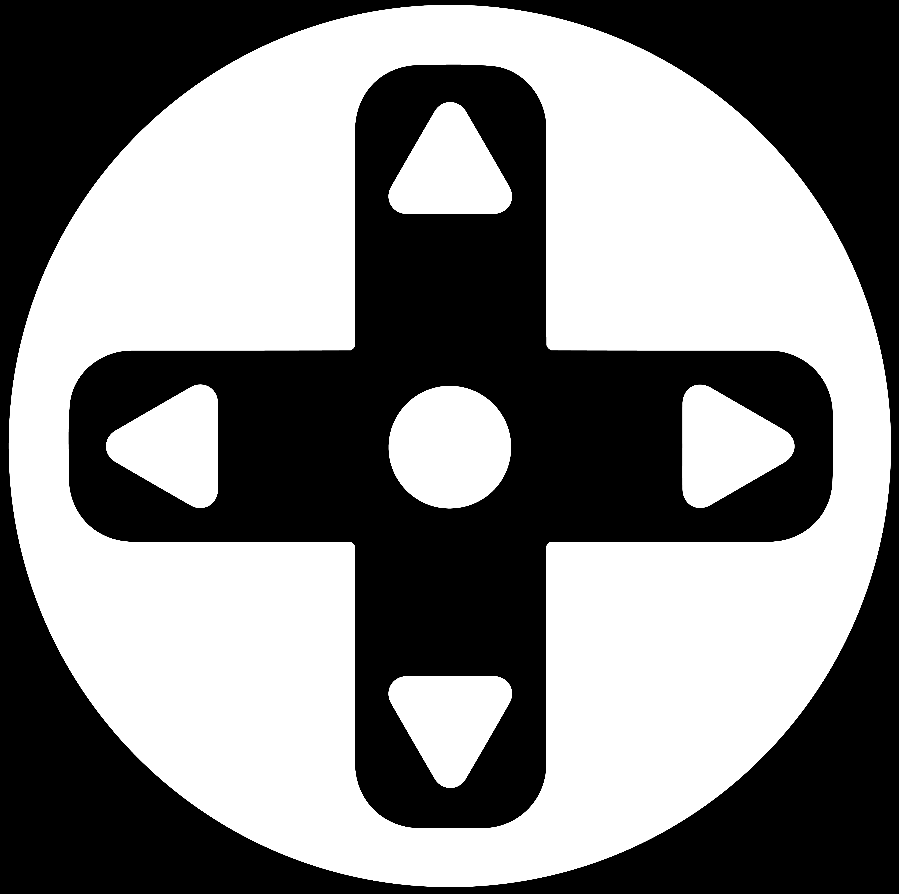

GameDirection
Public brand kit - colors, type, logo, and shape rules for building GameDirection-branded sites and materials. See brand-guidelines.md for the full written rules this page visualizes.
Color
Sampled directly from the official logo files - not invented.
GameDirection Blue#00ACED
Black#000000
White#FFFFFF
Neutral Gray#A6A8AB
Light Gray#D1D3D4
Light Mode / Dark Mode
Both schemes side by side - this is how the same UI should look in each mode.
Light
Card title
Muted supporting text sits at #5B5D60 on white.
Dark
Card title
Muted supporting text sits at #A6A8AB on black.
Typography
Raleway, the only typeface found in official source material.
H1 / 700Memorable Player Experiences
H2 / 700Accessible by Design
H3 / 600Built for Neurodivergent Players
Body / 400GameDirection is a game studio focused on memorable player experiences.
Medium / 500Used for emphasis and nav labels.
Shape & Buttons
The logo is built from circles - UI should follow that language: rounded, never sharp.
Avatars: always circular
Logo Usage
Full color - on white

Reverse - on black
Icon-only mark
Do / Don't
Do
- Use brand blue #00ACED as the only accent color
- Keep buttons, cards, and inputs rounded
- Use Raleway for all brand-facing text
- Give the logo clearspace equal to its own height
Don't
- Recolor the logo mark off-brand
- Use sharp, unrounded corners
- Mix in a second display typeface
- Place small blue text directly on white - use it for large text, icons, or filled buttons only